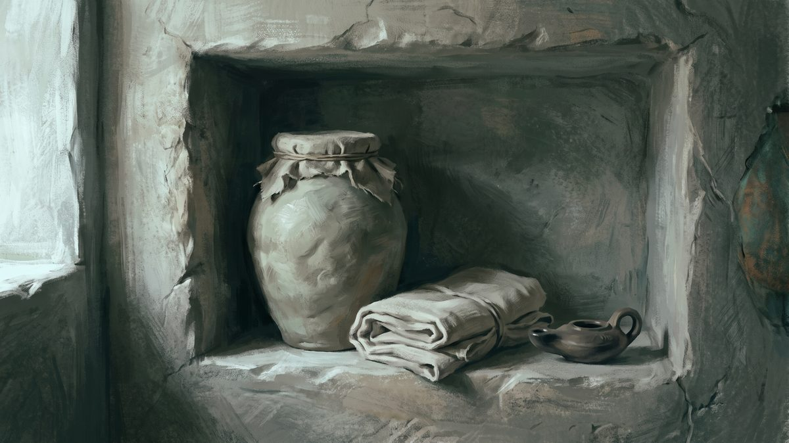

명령은 열여덟 번, “지키라”는 없다
“내 말을 지키면”이라는 말이 요한복음에 아홉 번 나와요. 그런데 예수님이 제자에게 “지키라”고 명령하신 곳은 한 번도 없어요.
지킨다는 게 내 힘으로 해내는 일일까요?
질문부터 정확히 세워 볼게요.
진실로 진실로 너희에게 이르노니 사람이 내 말을 지키면 영원히 죽음을 보지 아니하리라
요한복음 8:51 · 개역개정
이렇게 읽으면 조건문처럼 들려요. 지키면 산다, 그러니 지키는 일은 내 몫이다 — 이 순서로 읽히죠. 그런데 성경이 말하는 구원은 사람이 애써서 하나님께 올라가는 일이 아니라 하나님이 먼저 찾아오시는 일이에요. 두 문장이 서로 부딪히는 것처럼 보여요.
이 페이지는 그 부딪힘을 낱말 하나를 끝까지 따라가서 풀어 봐요. “지키다”로 옮긴 헬라어가 요한복음에 몇 번, 어떤 모양으로, 누구를 주어로 삼아 나오는지를 전부 세어 봤어요.
이 낱말은 원래 무슨 뜻이었을까요?
지키다로 옮긴 말은 테레오(τηρέω)예요. 뿌리가 “규칙을 이행하다” 쪽이 아니에요.
고전 헬라어 사전(LSJ)이 뜻을 늘어놓은 순서가 중요해요. 맨 앞에 오는 것이 그 낱말의 중심이거든요.
| 뜻 | 고전 용례 | |
|---|---|---|
| I | 지켜보다 · 간수하다 · 보호하다망을 보며 축나지 않게 붙들고 있는 일이에요. | 성벽을 지키다(투키디데스 2.13) · 집을 지키다(데메테르 찬가 142) |
| II | 주시하다 · 노려 기다리다 | 바람을 기다리다(투키디데스 1.65) · 궂은 밤을 노리다(3.22) |
| III | 약속·맹세·맡긴 물건을 그대로 지니다 | 맹세(ὅρκους) · 파라카타테케(παρακαταθήκη) = 맡아 둔 물건 |
세 번째 줄의 “맡긴 물건”이 이 낱말의 성격을 잘 보여 줘요. 남이 맡긴 것을 축내지 않고 그대로 되돌려주는 일, 그게 테레오예요.
요한복음이 이 낱말을 처음 꺼내는 두 곳도 신앙과 아무 상관이 없어요. 하나는 가나 혼인집의 연회장이 “좋은 포도주를 지금까지 남겨 두었다”고 말하는 대목(2:10)이고, 다른 하나는 마리아가 향유를 “장례할 날을 위하여 간직하게 하라”는 대목(12:7)이에요. 둘 다 맡아 두었다가 때가 되어 내놓는 일이에요.

가운데 숫자 칸을 보세요. 요한복음·요한서신·요한계시록을 다 합쳐도 “순종”이라는 낱말이 한 번도 안 나와요. ὑπακούω(순종하다) 0회, ὑπακοή(순종) 0회, ὑπήκοος(순종하는) 0회예요. 요한복음은 πείθω(복종하다)도 안 써요. 그 몫을 “간수하다”와 “거하다”가 맡고 있어요.
요한복음에 “지키라”는 명령이 있을까요?
없어요. 고별강화 네 장에 나오는 명령법 동사를 하나도 빼지 않고 세어 봤어요.
헬라어는 명령인지 서술인지가 동사 모양에 찍혀 있어요. 그래서 “명령법”만 따로 뽑아내는 일이 가능해요. 요한복음 14장부터 17장까지 명령법 동사는 모두 열여덟 개예요.
| 절 | 헬라어 | 뜻 | 누구에게 |
|---|---|---|---|
| 14:1 | ταρασσέσθω (부정) | 근심하지 말라 | 제자 |
| 14:8 | δεῖξον | 보여 주소서 | 빌립 → 예수님 |
| 14:9 | δεῖξον | 보여 달라 (예수님이 되받아 인용) | 인용 |
| 14:11 | πιστεύετε ×2 | 믿으라 | 제자 |
| 14:27 | ταρασσέσθω · δειλιάτω (부정) | 근심·두려워 말라 | 제자 |
| 14:31 | ἐγείρεσθε | 일어나라 | 제자 |
| 15:4 | μείνατε | 내 안에 거하라 | 제자 |
| 15:7 | αἰτήσασθε | 구하라 | 제자 |
| 15:9 | μείνατε | 내 사랑 안에 거하라 | 제자 |
| 15:20 | μνημονεύετε | 기억하라 | 제자 |
| 16:24 | αἰτεῖτε | 구하라 | 제자 |
| 16:33 | θαρσεῖτε | 담대하라 | 제자 |
| 17:1 · 17:5 | δόξασόν | 영화롭게 하소서 | 예수님 → 아버지 |
| 17:11 | τήρησον | 그들을 지켜 주소서 | 예수님 → 아버지 |
| 17:17 | ἁγίασον | 거룩하게 하소서 | 예수님 → 아버지 |
제자에게 주어진 명령은 이것뿐이에요. 근심하지 말라 · 두려워하지 말라 · 믿으라 · 일어나라 · 거하라(두 번) · 구하라(두 번) · 기억하라 · 담대하라.
“지키라”는 없어요. 요한복음 전체를 통틀어 테레오의 명령형은 딱 하나, 17장 11절의 τήρησον인데 그 말을 듣는 분은 제자가 아니라 아버지예요.
신약의 다른 책들은 이 낱말을 명령형으로 잘 써요. “계명들을 지키라”(마태복음 19:17) · “지키라”(요한계시록 3:3) · “네 자신을 지키라”(디모데전서 5:22)처럼요. 그러니 문법이 막혀 있던 게 아니에요. 요한복음이 그 낱말을 일부러 비워 둔 거예요.
그럼 14장 15절은 명령문일까요?
여기서 사본이 갈려요. 그리고 우리말 성경은 명령이 아닌 쪽을 골랐어요.
너희가 나를 사랑하면 나의 계명을 지키리라
요한복음 14:15 · 개역개정
끝이 “지키라”가 아니라 “지키리라”예요. 명령이 아니라 앞으로 그렇게 된다는 서술이에요. 사본을 대조해 보면 왜 이렇게 옮겼는지가 드러나요.
| 판본 | 읽기 | 문법 |
|---|---|---|
| SBLGNT 2010 · 네스틀레 1904 · 웨스트코트–호트 1881 · 티셴도르프 8판 | τηρήσετε | 미래 직설법“너희가 지킬 것이다” |
| 비잔틴 다수본문 2005 · 스테파누스 1550 · 스크리브너 1894 · 그리스 정교회 1904 | τηρήσατε | 부정과거 명령법“지켜라” |
개역개정은 위쪽을, KJV 는 아래쪽을 따랐어요. 그리고 이어지는 23절과 24절도 보세요. 23절은 “지키리니”(τηρήσει, 미래 직설법), 24절은 “지키지 아니하나니”(τηρεῖ, 현재 직설법)예요. 14장의 지킴 진술은 전부 명령이 아니라 사실 서술이에요.
명령형이 원래 모습인데 나중에 부드러워진 것인지, 서술형이 원래인데 나중에 규범으로 굳은 것인지는 정해지지 않았어요. 오래된 사본은 서술형 쪽이 많아요. 다만 “어느 쪽이 원본인가”를 이 페이지가 결정할 수는 없어요.
곧 다 흩어질 사람들에게 “지켰다”고 하세요
17장 6절의 시제가 눈에 띄어요.
세상 중에서 내게 주신 사람들에게 내가 아버지의 이름을 나타내었나이다 그들은 아버지의 것이었는데 내게 주셨으며 그들은 아버지의 말씀을 지키었나이다
요한복음 17:6 · 개역개정
“지키었나이다”는 τετήρηκαν, 완료형이에요. 이미 지켜 왔고 그 상태가 지금도 이어진다는 뜻이죠.
그런데 이 기도가 드려진 밤에 무슨 일이 있었는지 보세요. 조금 앞에서 예수님은 베드로에게 세 번 부인할 것을 말씀하셨고(13:38), 조금 뒤에서는 “너희가 다 각각 제 곳으로 흩어지고 나를 혼자 두리라”고 하세요(16:32). 몇 시간 뒤 전원이 무너질 사람들을 두고 “지켰다”고 하신 거예요.
그러니 여기서 “지켰다”가 흠 없이 해냈다는 뜻일 수는 없어요. 케임브리지 주석은 이 낱말을 “눈을 떼지 않고 지켜보는 태도”로 풀어요. 마이어는 “믿음과 행위로” 지켰다고 봐요.
절의 차례도 눈여겨볼 만해요. 나타내었다 → 아버지의 것이었다 → 내게 주셨다 → 그다음에 지켰다. 지킴이 자격 요건으로 앞에 오지 않아요. 같은 순서가 15장 16절에도 있어요. “너희가 나를 택한 것이 아니요 내가 너희를 택하여 세웠나니”로 시작해서 열매 이야기가 뒤에 와요.
같은 낱말을 하나님이 우리에게 하세요
이게 우리말 성경에서는 잘 안 보이는 대목이에요.
17장 안에서 테레오는 양쪽으로 흘러요. 제자가 말씀을 지키고, 아버지와 아들이 제자를 지키세요. 그런데 개역개정은 이 둘을 서로 다른 우리말로 옮겼어요.
| 절 | 헬라어 | 주어 → 대상 | 개역개정 |
|---|---|---|---|
| 요 17:6 | τετήρηκαν | 제자 → 말씀 | 지키었나이다 |
| 요 17:11 | τήρησον | 아버지 → 제자 | 보전하사 |
| 요 17:12 | ἐτήρουν + ἐφύλαξα | 예수님 → 제자 | 보전하고 지키었나이다 |
| 요 17:15 | τηρήσῃς | 아버지 → 제자 | 보전하시기를 |
| 계 3:10 | ἐτήρησας … τηρήσω | 사람 → 말씀 / 예수님 → 사람 | 네가 지켰은즉 나도 너를 지켜 |
둘째 줄부터 넷째 줄까지가 전부 같은 동사인데 우리말로는 “보전”이 됐어요. 12절은 한술 더 떠서 테레오를 “보전하고”, 그 옆의 다른 동사 φυλάσσω를 “지키었나이다”로 나눠 놓았어요. 우리말로만 읽으면 제자가 하는 지킴과 하나님이 하시는 지킴이 한 낱말이라는 사실이 안 보여요.
요한계시록 3장 10절은 이 상호성을 아주 드러내 놓고 말해요. 네가 지켰으니 나도 너를 지키겠다는 거예요.
요한일서의 마지막 장에서는 아예 주어가 바뀌어요.
하나님께로부터 난 자는 다 범죄하지 아니하는 줄을 우리가 아노라 하나님께로부터 나신 자가 그를 지키시매 악한 자가 그를 만지지도 못하느니라
요한일서 5:18 · 개역개정
“하나님께로부터 난 자”와 “하나님께로부터 나신 자”가 다른 분이에요. 헬라어 분사 시제가 달라요. 앞은 완료분사 γεγεννημένος(신자), 뒤는 부정과거분사 γεννηθείς(그리스도)예요. 지키시는 분이 그리스도라는 뜻이고, 개역개정은 이미 그렇게 옮겨 두었어요.
구약은 이 문제를 어떻게 풀었을까요?
에스겔이 이미 한 문장 안에 답을 넣어 두었어요.
또 내 영을 너희 속에 두어 너희로 내 율례를 행하게 하리니 너희가 내 규례를 지켜 행할지라
에스겔 36:27 · 개역개정
이 절의 히브리어를 보세요. “행하게 하리니”에 해당하는 말이 וְעָשִׂיתִי אֵת אֲשֶׁר인데, 직역하면 “내가 그렇게 되도록 만들겠다”예요. 주어가 하나님이세요. 70인역도 같은 곳을 ποιήσω ἵνα …(내가 … 하도록 만들겠다)로 옮겼어요.
그리고 바로 뒤에 붙는 “내 규례를 지켜”의 동사가 תִּשְׁמְרוּ, 곧 “지키다”를 뜻하는 샤마르예요. 정리하면 이래요.
두 문장은 서로 부딪히지 않아요. 한 문장의 앞과 뒤예요. 이 페이지 첫머리에서 세운 질문의 답이 여기 있어요.
같은 결이 다른 데도 있어요. 70인역 잠언 3장 1절은 “내 말을 네 마음이 지키게 하라”(τηρείτω σὴ καρδία)고 해서 지키는 일을 의지가 아니라 마음에 둬요. 70인역 신명기 30장 6절은 주께서 마음을 정결케 하셔서 사랑하게 하신다고 해요. 사랑조차 하나님이 가능하게 만드시는 거예요.
요한복음이 이 예언에 대는 답이 보혜사예요. 성령이 “너희 속에” 계시고(14:17), 예수님의 말씀을 “생각나게” 하세요(14:26). 요한일서 3장 24절은 계명을 지키는 사람이 하나님 안에 거한다고 말한 바로 다음 문장에서 그 증거로 성령을 지목해요.
그러면 사람이 할 일은 없는 걸까요?
그렇게까지 가면 본문이 버티지 못해요. 반대편 자료를 먼저 놓을게요.
| 본문 | 무엇이 걸리나 |
|---|---|
| 요한복음 9:16 | “안식일을 지키지 아니하므로” — 여기 테레오는 규정 준수가 맞아요 |
| 사도행전 15:5 | “모세의 율법을 지키라”(τηρεῖν τὸν νόμον) — 율법 준수 용법이에요 |
| 야고보서 2:10 | “온 율법을 지키다가 그 하나를 범하면” — 역시 준수예요 |
| 요한복음 15:10 | “내 계명을 지키면 … 거하리라” — ἐάν + 가정법, 진짜 조건절이에요 |
| 요한일서 2:4 | “계명을 지키지 아니하는 자는 거짓말하는 자” — 실제 행동이 시험대에 올라요 |
| 요한계시록 3:3 | “지키어 회개하라”(τήρει) — 요한 문헌인데 명령형이에요 |
그래서 “테레오는 수행이 아니다”는 낱말 차원에서는 성립하지 않아요. 다만 하나가 눈에 띄어요. 요한복음에서 테레오의 목적어로 νόμος(율법)가 한 번도 오지 않아요. 요한복음에 율법이라는 낱말 자체는 열네 번 나오는데도요. 지킬 대상은 늘 예수님의 말씀과 계명이에요.
그 “말씀”이 무엇인지도 요한이 직접 말해 둬요. 15장 3절은 “내가 일러준 말로 말미암아 이미 깨끗하여졌으니”라고 해요. 지켜야 할 그 말씀이 먼저 지키는 사람을 씻은 거예요. 6장 63절은 “내가 너희에게 이른 말은 영이요 생명이라”고 하고요. 12장 50절은 한 걸음 더 나가서 “그의 계명이 영생인 줄 아노라”고 해요. 계명이 영생을 얻는 수단이 아니라 계명 자체가 영생이라는 말이에요.
계명의 내용도 그래요. 13장 34절과 15장 12절이 그 내용을 “서로 사랑하라”로 정해 주는데, 척도가 “내가 너희를 사랑한 것 같이”(καθὼς)예요. 지켜야 할 계명 자체가 이미 받은 사랑을 재료로 정의되어 있어요.
정리표
일곱 개 명제로 쪼개서 하나씩 판정했어요. 반증된 것부터 보세요.
| 항목 | 근거 | 판정 |
|---|---|---|
| 테레오는 규정 준수를 뜻할 수 없다 | 요 9:16 안식일 · 행 15:5 율법 · 약 2:10 · 마 19:17 | 반증 |
| 지킴은 하나님께 나아가기 위한 사람의 수단이다 | 요 15:16 택함이 앞 · 15:5 “나를 떠나서는 아무것도” · 17:6 주심→지킴 순서 · 요일 4:19 | 반증 |
| 지킴에 사람의 실제 행위는 없다 | 요 15:10 조건절 · 요일 2:4 · 3:22 · 계 3:3 명령형 | 반증 |
| 테레오의 기본 뜻은 “수행”이 아니라 “지켜 간수함”이다 | LSJ 1·3번 항목 · 요 2:10 포도주 · 12:7 향유 · 신약 밖 다수 용례가 경비·구금·보관 | 확인 |
| 요한복음에서 예수님이 제자에게 “지키라”고 명령하신 적이 없다 | 14–17장 명령법 18개 전수. 테레오 명령형은 17:11 하나이고 수신자가 아버지 | 확인 |
| 요한복음 14:15 는 명령이 아니라 서술이다 | 비평본문 τηρήσετε 미래 직설법. 개역개정 “지키리라” | 확인 (이문 있음) |
| 같은 동사로 하나님이 우리를 지키신다 | 요 17:11 · 17:12 · 17:15 · 요일 5:18 · 계 3:10 | 확인 |
| 14:15 이문에서 어느 쪽이 원본인가 | 오래된 사본은 서술형 쪽이 많으나 발생 방향은 정해지지 않음 | 미결 |
| 요한계시록에는 명령형이 있는데 복음서에는 없는 이유 | 저자 문제인지 장르(예언서 대 고별강화) 차이인지 가려지지 않음 | 미결 |
“지킨다”는 애써서 자격을 얻어 내는 일이 아니라, 이미 내게 맡겨진 말씀을 축내지 않고 간수하는 일이에요. 행위는 있어요. 다만 방향이 반대예요. 위로 올라가는 노동이 아니라 이미 들어온 것을 붙들고 있는 자세예요. 그리고 그 붙듦을 가능하게 하시는 분이 따로 계세요.
어려운 말 풀이
- 테레오 τηρέω
- 지켜보다·간수하다·보호하다. 요한 문헌이 “순종” 대신 쓰는 낱말이에요.
- 퓔라소 φυλάσσω
- 막아 지키다. 뜻이 겹쳐요. 요한복음 17:12 는 두 낱말을 나란히 붙여 써요.
- 직설법 直說法
- 사실을 그대로 말하는 동사 모양이에요. “지킨다”·“지킬 것이다”가 여기 들어가요.
- 명령법 命令法
- 시키는 동사 모양이에요. “지켜라”. 헬라어는 이 둘이 글자 모양부터 달라요.
- 완료 完了
- 이미 일어났고 그 결과가 지금도 이어진다는 시제예요. 요한복음 17:6 이 이 시제예요.
- 70인역 七十人譯 · LXX
- 기원전 3~2세기에 구약을 헬라어로 옮긴 번역본이에요. 신약 기자들이 즐겨 인용했어요.
- 비평본문 · 다수본문
- 오래된 사본을 우선하는 편집본과, 사본 수가 많은 쪽을 따르는 편집본이에요. 14:15 에서 둘이 갈려요.
- 샤마르 שָׁמַר
- 히브리어로 지키다. 마음에 간직한다는 뜻도 함께 있어요. 창세기 37:11 이 그 용례예요.
근거 자료
낱말 집계는 통념을 옮긴 것이 아니라 헬라어 본문 파일을 직접 세어 나온 수치입니다. SBLGNT 신약 27권을 형태 분석 자료(MorphGNT)로 내려받아 표제어 단위로 집계했고, 명령법 추출은 각 낱말에 붙은 여덟 자리 분석 부호의 ‘법’ 자리를 읽어 뽑았습니다. 따라서 “열여덟 개”와 “0회”는 셈한 값입니다.
사본 대조는 비잔틴 다수본문 원자료에서 해당 절을 직접 확인했습니다. 14:15 의 마지막 낱말에 붙은 부호가 명령법으로 표기되어 있어, 비평본문의 미래 직설법과 갈린다는 점을 확인했습니다.
어느 쪽 읽기가 원본인지, 요한계시록과 요한복음의 차이가 어디서 오는지는 결정적으로 입증된 것이 없습니다. 정리표에 미결로 남겨 두었습니다.
- MorphGNT · SBLGNT 신약 27권 형태 분석 본문 (표제어 전수 집계에 사용)
- 비잔틴 다수본문(RP) 요한복음 — 14:15 이문 확인
- 리델–스콧–존스 희랍어 사전(LSJ) τηρέω 항목
- 스웨테 판 70인역 — 잠언 3장, 잠언 7장, 에스겔 36장, 신명기 30장
- 히브리어 마소라 본문 — 에스겔 36:26–27, 예레미야 31:33
- 아우구스티누스 『요한복음 강해』 74 (요 14:15–17) · 82 (요 15:8–10)
- 근대 주석 종합 — 케임브리지 성경주석, 마이어, 벵겔 『그노몬』, 빈센트 『낱말 연구』
- 대한성서공회 『성경전서 개역개정판』 (인용 다섯 절)
아우구스티누스는 『요한복음 강해』 82 에서 이 문제를 한 문장으로 정리했습니다. “사랑이 계명 지킴을 낳는다. 그러면 계명 지킴이 사랑을 낳는가? 사랑이 먼저라는 것을 누가 의심하겠는가?” 다만 그는 펠라기우스 논쟁의 당사자였으므로, 그 논쟁의 맥락을 감안해서 읽어야 합니다.